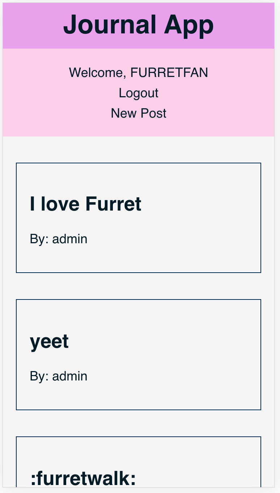
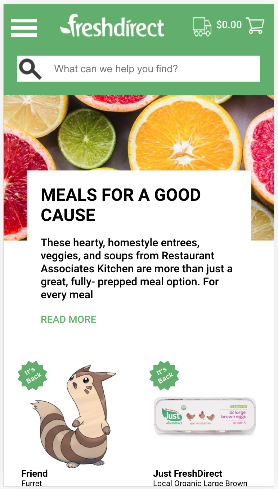
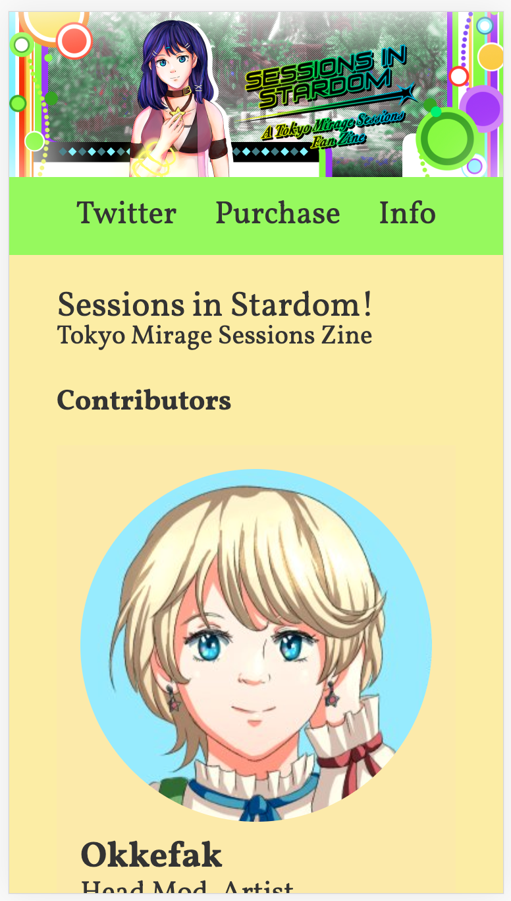

About Me
My name is Janis, and I'm a full stack web developer from NYC. I graduated from General Assembly's Software Engineering Immersive program. I work with HTML, CSS (SCSS), Javascript (React, Express), MongoDB, Ruby (Ruby on Rails), and SQL. I am particularly passionate about CSS, and using it for accessibility on the web! I hope I can help make the web a better place for everyone.
My Projects
Journal App with full CRUD functionality
A full stack blog app built with a Ruby on Rails backend and a React frontend. Originally built in just a week, with future improvements to come.
GithubFresh Direct Rebuild Group Project
Working with a team of 3 UX designers and 4 other devs, we built this mockup in a week using an Express backend and React frontend.
GithubSessions in Stardom Charity Zine Landing Page
This is the landing page for a fan project to raise money for charity. I approached the organizers of the project and volunteered to build them a website.
GithubContact Me
My email address is janis.rancourt@gmail.com